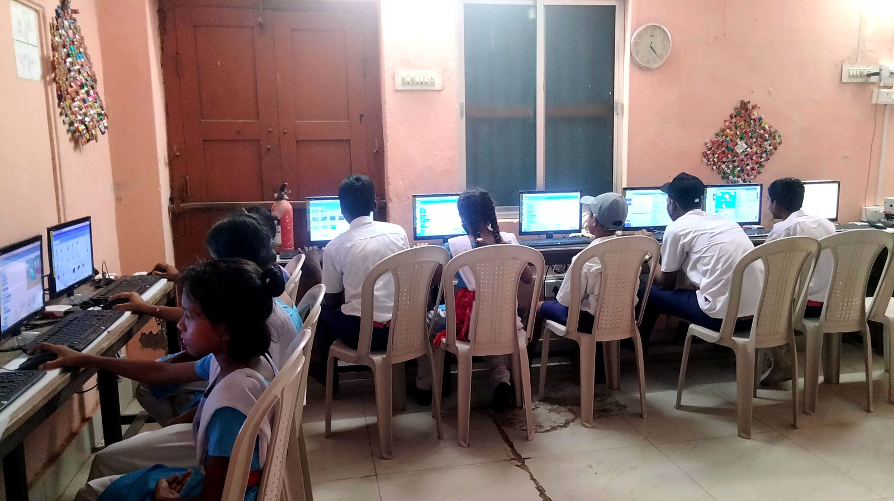
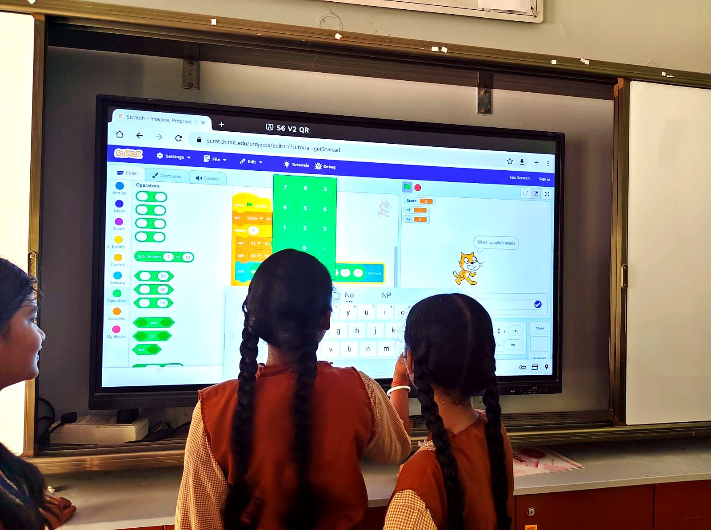
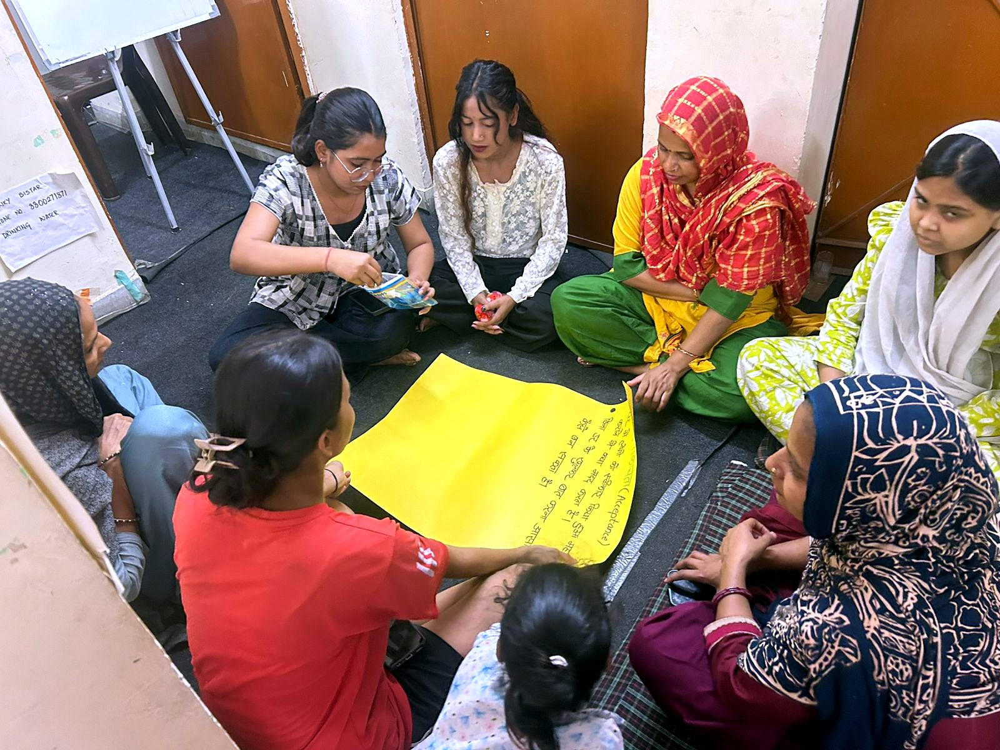

Who Lead Forward reaches
Lead Forward works directly with 500 adolescents in Classes 9 to 12 across Dakshinpuri. It also works with 200 of their parents, so the support continues at home, and reaches around 1,000 more community members through awareness sessions, dialogues and youth-led activities.



Adolescents carry a lot at once.
In marginalised urban communities, young people face several pressures together. Lead Forward responds to all of them in one integrated model.
Academic pressure
Exam stress, performance anxiety and peer pressure, with few places to talk about them.
Narrow view of careers
Limited exposure to the pathways that exist beyond school.
Low digital confidence
Fear of technology instead of fluency with it, just as AI reshapes learning and work.
Little wellbeing support
Minimal access to structured, safe spaces for mental health and guidance.
Two pillars. One young person.
Confidence, emotional stability and readiness to learn depend on each other, so skills sessions build self-belief and wellbeing sessions build problem-solving.
Skills Development
- Using AI tools responsibly
- Prompt engineering
- English communication
- Digital confidence
- Problem-solving and critical thinking
- Career exploration
Mental Health and Wellbeing
- Understanding and normalising stress
- Coping strategies and emotional regulation
- Peer empathy and support
- Knowing when and where to seek help
A centre, ten schools and a neighbourhood.
The Youth Resource Centre anchors the programme in Dakshinpuri. Schools bring reach, parents bring support at home, and skilling partners open the next door.
How a young person moves through Lead Forward
From a first session in the classroom to a real next step beyond school.
- 1
Meet it at school
Classroom sessions introduce digital literacy, AI awareness and communication.
- 2
Build skills at the centre
Batch-wise training at the Youth Resource Centre: AI tools, prompting, English and careers.
- 3
Talk it through
Wellbeing circles make stress normal to discuss and build coping and peer support.
- 4
Step forward
Linkage to a skilling organisation, with exposure visits and pathway guidance.
Alongside, at home: parents take part in guided sessions, so young people return to more supportive conversations.
Built for the way adolescents learn.
Everyday language
Every session runs in Hinglish. Technical and psychological jargon is translated into examples from students' own lives.
Learning through experience
Storytelling, activities, peer discussion, reflection and real-life scenarios, rather than lectures.
Youth Champions
Young people from Dakshinpuri lead the sessions, building trust that outside facilitators cannot.
Learning as we go
Pre and post assessments track skills, confidence and awareness, and regular reviews bring youth feedback into the programme.